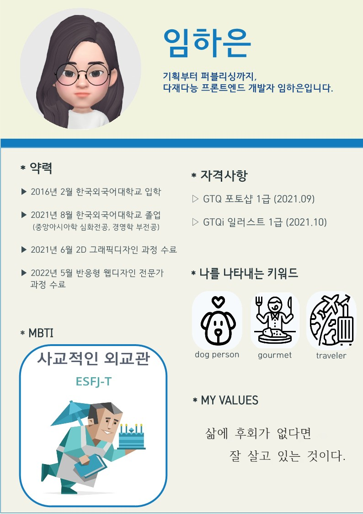
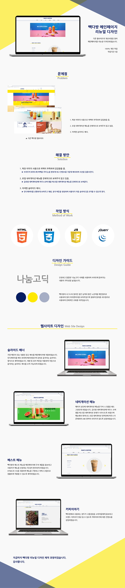

프로필 사진
- Name : 임하은
- Birth : 1997. 09. 19
- Address : 서울시 강서구 방화동
- Phone : 010-4306-1234
- Email : fkagkrsus@naver.com
로딩중
꾸준히 성장하는 웹퍼블리셔 임하은 입니다.
현재에 안주하지 않고 매일 프론트엔드 분야에서 발자취를 넓혀가는 것을 목표로
웹 접근성과 실용성, 심미성을 두루 갖춘 웹 사이트 구축을 위해 최선을 다합니다.
스크롤바를 내리면 작품을 감상할 수 있습니다.
프로필 사진
‘하은아, 인생은 속도가 아니라 방향이야.’
늘 스스로를 다른 사람과 비교하며 조바심 내던 제게,
어느 날 친구가 해준 말은 깊은 울림이 되어 가치관을 바꿔주었습니다.
성공가도로 나아가야 한다는 생각에서 벗어나 하고 싶은 일을 하기로 마음 먹은 뒤 첫 결정은 바로 웹 개발 공부를 시작한 일입니다.
프론트엔드 개발은 제가 그동안 공부했던 외국어와 달리, 내가 만드는대로 보여지고 노력한만큼 쌓여가는 것을 오롯이 느낄 수 있는 기쁨을 주었습니다.
비전공자로서 웹 개발 분야에 첫 발을 내딛으며 많은 시행착오를 거쳤지만, 그 과정에서 일궈낸 저의 시간을 이 포트폴리오를 통해 보여드리고자 합니다.
HTML5 & CSS3 시멘틱 페이지를 ZenCoding(EMMET), SCSS로 코딩할 수 있으며
웹 퍼블리싱에서 가장 많이 사용되는 자동 슬라이드, 원페이지 등의 기술을 원만히 다룰 수 있습니다.
대학에서 경영학을 부전공하며 배운 마케팅 기술을 접목한 페이지 기획 역량을 갖추고 있습니다.
JS 플러그인을 사용에 그치지 않고 필요한 기능을 직접 구현할 수 있는 Javascript/jQuery 로직구현이 가능합니다.
퍼블리싱에서 나아가 프론트엔드 개발 역량을 키우기 위해 React 학습을 병행하고 있습니다.
창의적이면서도 익살스러운 표현을 잘해서 다양한 아이디어를
재미있게 풀어낸다.
언제나 사회를 바라보는 시각이 다방향이며,
깊은 사고를 통해 편협된 생각에 갇히지 않으려고 노력한다.
늘 약자에 대해 깊이 생각하며 문제를 다시금 되새기고 도움을 주고자 노력한다.
임하은은 자기가 하고 싶은 일은 끝까지 해내고야 마는 끈기와 열정,
힘든 그 과정을 견뎌내는 인내, 자신이 예상했던 이미지와
다르더라도 맡은 일을 끝까지 해내는 책임감 등 많은 장점을 갖춘
한 사람이라고 생각해
예희: 하은이는 주체적이고 이타적이다, 뭐든 혼자서도 잘한다.
연신: 마음이 따뜻하고 싹싹해요~
민선: 임하은 - 계획 = 0이다
사용자의 Context와 Needs를 파악하고
Problem을 해결할 수 있는 Insight 도출
시멘틱을 지향하는 HTML/CSS 작성능력 보유,
자바스크립트와 제이쿼리 기반의 로직 구현 가능
협업 웹코딩의 필수 기술인 SCSS를 이용한
CSS 스타일링을 원활이 사용할 수 있습니다.
국내 프론트엔드 시장의 대세 리액트 코드구현,
자바스크립트와 제이쿼리 기반의 로직구현 가능
어제보다 더 나은 오늘의 내가 되고자 작은 것이라도 매일 배우려는
태도로 매사에 임하고 있습니다.
HTML5 & CSS3 시멘틱 페이지를 ZenCoding(EMMET)으로 코딩할 수 있습니다.
웹 페이지 제작 시 경영학에서 배운 마케팅 전략을 반영하며
장점중 하나입니다.
JS 플러그인을 사용에 그치지 않고 필요한 기능을 직접 구현할 수 있는 Javascript/jQuery 로직 구현이 가능합니다.

UX의 정의에 대해서 알아보고, 다양한 UX의 사례들, 특히나 성공적인 UX라 불리는 사례들을 보면서
사용자 경험을 바탕으로 어떤 제품이나 서비스를 구축하는 것의 중요성을 깨달았다.
내가 생각하는 UX란, 사용자가 원하는 기능을 사용할 때 사용자가 불편함을 느끼지 않고 사용할 수 있도록 하고,
원하는 활동을 편리하게 제품이나 서비스를 이용하여 할 수 있도록 하는 것이라는 생각이 들었다.
사전적인 의미에서 UX란 사람의 여러 감각과 감정의 총합을 뜻하는데, 내가 생각하는 UX는 ‘불편함’이라는,
혹은 다르게 불릴 수도 있는 부정적인 감정을 최소화시키는 것이라는 생각이 든다.


PAIK’S COFFEE Renewal Design
기존 웹사이트의 개선사항을 찾아 메인페이지를 리뉴얼 디자인하였습니다.
빽다방의 컬러 아이덴티티를 사용하여 브랜드 이미지를 강조하였으며,
간결한 레이아웃으로 전달하고자 하는 내용을 보기 쉽게 배치하였습니다.
작업프로그램 : Photoshop, Visual Studio Code
100% 개인 작업

ISAAC TOAST Renewal Design
기존 웹사이트의 개선사항을 찾아 메인페이지를 리뉴얼 디자인하였습니다.
이삭토스트의 컬러 아이덴티티를 사용하여 브랜드 이미지를 강조하였으며,
간결한 레이아웃으로 전달하고자 하는 내용을 보기 쉽게 배치하였습니다.
작업프로그램 : Photoshop, Visual Studio Code
100% 개인 작업


DANYAGN TRAVEL Site Design
4가지 카테고리로 나누어 단양의 대표적인 문화를 소개하는 원페이지
형식의 사이트를 제작하였습니다. 도담삼봉을 담은 로고마크를
디자인하였으며, 로고에 사용된 컬러를 적용하여 통일성을 주었습니다.
작업프로그램 : Photoshop, Illustrator, Visual Studio Code
100% 개인 작업


‘스타일을 창조하여 그것을 섬세한 디자인으로 탈바꿈 시키고싶다’ 는 마음으로 매일 노력하고 있습니다.
HTML5 & CSS3 시멘틱 페이지를 SCSS, ZenCoding(EMMET)으로 작성할 수 있습니다.
클라이언트의 요구사항을 적극적으로 반영하는 UI/UX 디자인 능력은 저의 최고의 장점중 하나입니다.
JS 플러그인을 사용에 그치지 않고 필요한 기능을 직접 구현할 수 있는 Javascript/jQuery 로직구현이 가능합니다.
새로운 코딩기법과 디자인을 배우는 것이 정말 즐겁습니다.
페이지 전체의 계층구조를 입체적으로 분석할 수 있는
실무형 코딩기법 Emmet을 사용할 수 있어 업무시간을 단축시킬 수 있을뿐 아니라,
유지보수도 더욱 쉽고 정확하게 처리할 수 있습니다.
SCSS의 가장 큰 장점인 변수와 Mixin 기능을 적극 활용하여
CSS 스타일링을 할 수 있습니다.
Sprite-Image와 IR(Image Replacement)기법에 능숙
id, class를 남발하지 않고 원하는 요소를 셀렉팅할 수 있는 능력,
CSS3 Transform, Transition, Keyframes을 이용한 애니메이션 효과 구현
슬라이드 구현에 적합한 ul,li,a 태그와 flxe를 사용하여 UI를 구현하였습니다.
또한 자바스크립트로 position의 lef값을 동적으로 변화시켜 이동하도록 하였습니다.
플러그인 없이 직접 구현하였습니다.

이전, 다음 기능을 가진 업그레이드 된 슬라이드로서 사용자 편의성을 향상되었습니다. 제이쿼리의 fadeIn(), fadeOut() API를 이용하여 코드를 구현하였습니다. 플러그인 없이 직접 구현하였습니다.
슬라이드 보기

시작, 정지기능이 장착된 슬라이드로서 일관성있게 한쪽 방향에서 다음 슬라이드가 노출되는 기능을 append() API와 콜백함수의 개념을 접목하여 구현하였습니다. 플러그인 없이 직접 구현하였습니다.
슬라이드 보기
저의 웹퍼블리싱 이야기 입니다.
질문을 선택하시면 정리된 답변을 보실수 있습니다.
더욱 궁금하신 점은 면접시 말씀드리겠습니다. 감사합니다~!
본 페이지는 저의 개인 포트폴리오용으로 제작되었으며, 상업적인 목적과 관련이 없음을 알려드립니다.